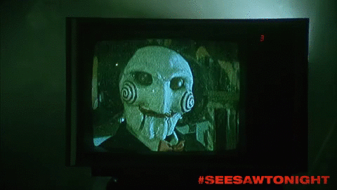
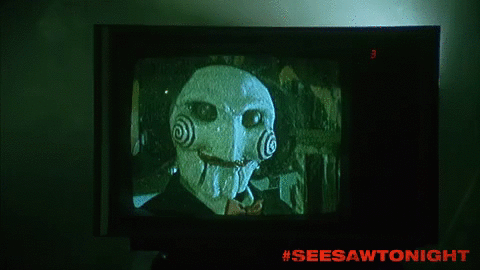

TUDO SOBRE OS JOGOS MORTAIS
SEJA BEM
AO JOGO
vindo


O QUE É SAW?
A franquia Saw é uma série de filmes de terror e suspense iniciada em 2004, criada por James Wan e Leigh Whannell. A história gira em torno do serial killer conhecido como Jigsaw, ou John Kramer, que não mata diretamente suas vítimas, mas as coloca em armadilhas mortais que testam sua vontade de viver, geralmente como punição por atitudes consideradas imorais. Com o tempo, a trama se aprofunda em sua filosofia distorcida de redenção e nos conflitos entre seus aprendizes, revelando uma narrativa complexa com reviravoltas, conexões entre personagens e cronologia não linear. Marcada por cenas gráficas e jogos sádicos, Saw se tornou um ícone do subgênero conhecido como "torture porn", influenciando o cinema de horror contemporâneo e acumulando diversos filmes ao longo dos anos, incluindo sequências, prequels e spin-offs como Spiral (2021)
 

O QUE É SUSPENSE?
O gênero de Suspense é utilizado na mídia há muitos anos. Focando-se em prender o público em uma narrativa de muita tensão, com o objetivo de gerar expectativas e, consequentemente, ansiedade no público. Alguns filmes e franquias populares que fazem parte desse gênero são: Jogos Vorazes, Silêncio dos Inocentes, Psicopata Americano, Alien e dentre outras. Vale ressaltar que suspense muitas vezes também é utilizado juntamente do terror para justamente criar o clima de mistério e expectativa característico dele.
 Jogos Mortais I(2004)
Jogos Mortais I(2004)